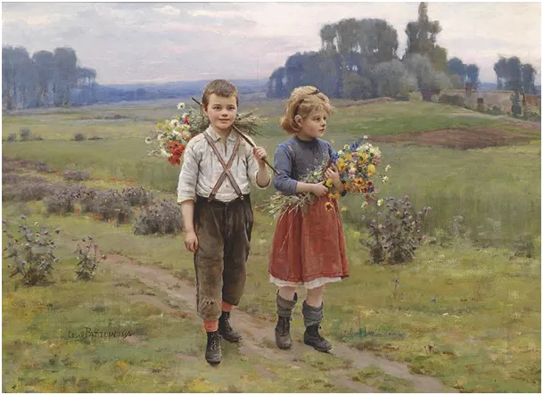
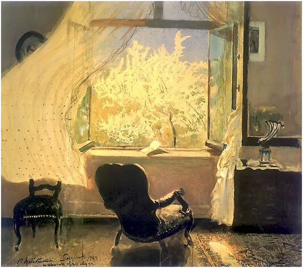

A może by tak na wagary ?
Strona dzięki Wam istnieje już prawie 4 lata i ma blisko 1000 artykułów o bardzo różnej treści. Gdy byłem blokowany na FB i X była jedynym miejscem, gdzie mogłem publikować. Oby już tak nigdy nie było, ale bądźmy ostrożni.

Gdy chodziliśmy na wagary często spędzaliśmy je w muzeach i galeriach sztuki. Miałem w Bydgoszczy doskonałą kolekcje Wyczółkowskiego. W starym EMPiKu czytaliśmy i przeglądaliśmy prasę z całego świata. Sporo czasu spędziłem w bibliotece technicznej, gdzie uczyłem się elektroniki, i oczywiście w garażu, gdzie skręcaliśmy stare motocykle. Chcę powiedzieć, że nie tylko w szkole człowiek się uczy i poznaje wszechświat, ale przede wszystkim poza nią.
Pisanie daje mi satysfakcję, gdy Was bawi lub uczy. Zachęca mnie do odkrywania prawdy i fałszu, który nas otacza. Jednak wiąże się z realnymi kosztami utrzymania serwera itp. Właśnie nadszedł taki termin. Dziękuje za dotychczasowe wsparcie i proszę Was o dowolne wpłaty na rzecz utrzymania serwisu. Nawet małe kwoty tworzą sumę. Dziękuję!
"Dzieci z bukietami" Cesar Pattein 1895
Informacja o rachunku poniżej.